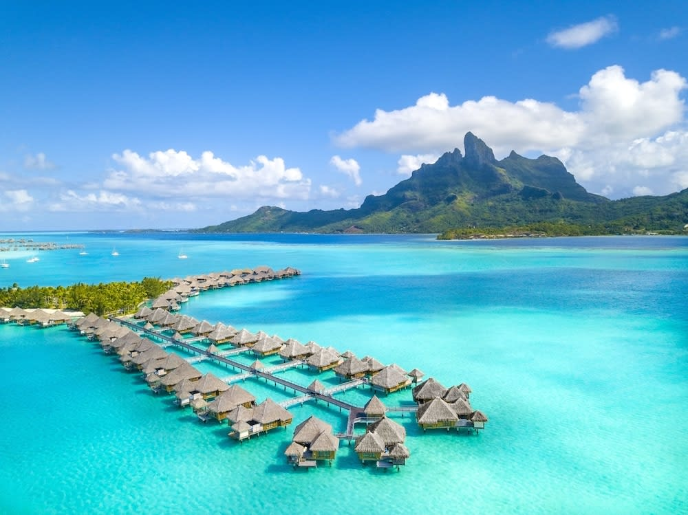
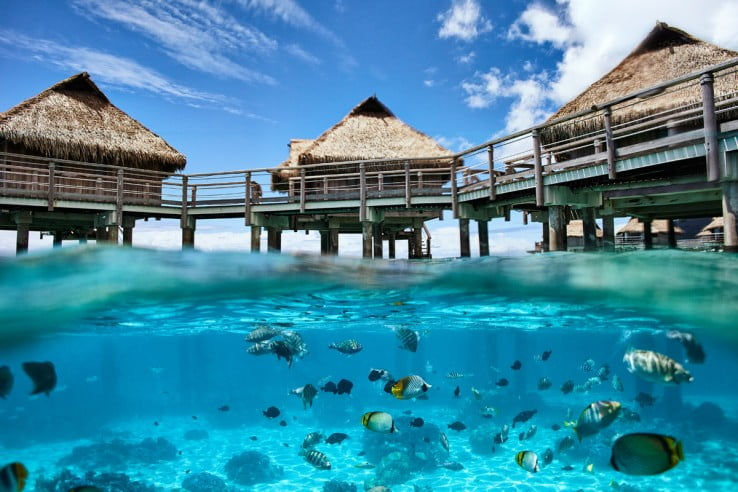
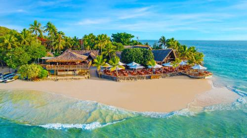

Pacific-The Top 3
Bora Bora
This French Polynesian island is the perfect place to go if you're looking to reconnect with nature, dial up the romance and pamper yourself while on vacation. In Bora Bora, you'll find overwater bungalows and luxurious spas made for honeymooners, plus a beautiful turquoise lagoon and lush Mount Otemanu to explore. For an overview of the island and an adrenaline rush, sign up for a four-wheel-drive excursion or a boat tour that includes a shark and stingray feeding.
Tahiti
Tahiti's international airport and variety of big-city amenities (think: diverse restaurants, exciting cultural events and abundant five-star resorts) make it a natural choice for a South Pacific vacation. But don't let the French Polynesian island's hustle and bustle fool you: Tahiti also boasts plenty of gushing waterfalls, towering mountains and breathtaking beaches to set the scene for your island getaway. Start your visit checking out the markets, boutiques and nightlife venues in Papeete (Tahiti's capital city) before escaping to one of the island's jaw-dropping natural wonders. Can't-miss spots include Fautaua Waterfall, the Vaipahi Gardens and Papenoo Beach.
Fiji
Head to one or more of Fiji's 333 islands if you appreciate cultural activities and attractions as much as you enjoy spending time outdoors. In Suva, the capital city, you can participate in a traditional kava ceremony (which involves drinking a yaqona root-based drink with mild sedative properties), watch a firewalking festival and visit the Fiji Museum. Meanwhile, Fiji's smaller destinations – including the Yasawa Islands and Taveuni – feature stunning beaches, coral gardens and rainforests waiting to be explored. When you tire of sunbathing, snorkeling or hiking, retreat to a rustic bungalow, a trendy boutique hotel or a luxe five-star resort.